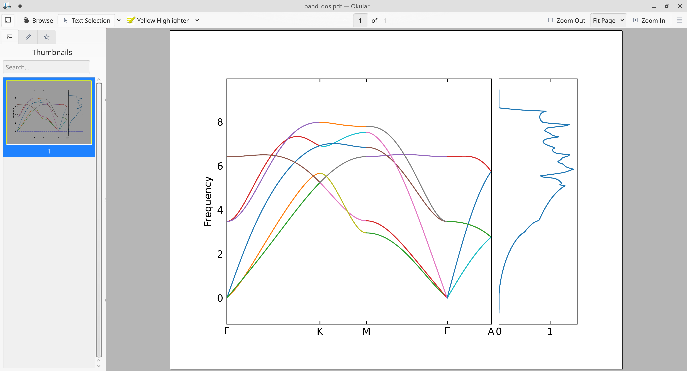
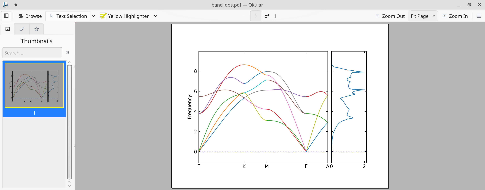

Phase Equilibria & Phase Diagram
边缘奇迹：相变和临界现象， 于渌 郝柏林 陈晓松， 190页
Phase Equilibria, Phase Diagrams and Phase Transformations: Their Thermodynamic Bases (2nd Edition), M. Hillert, 510页
Critical Opalescence & Critical Point
Critical opalescence is a phenomenon which arise in the region of a continuous (2nd order) phase transition. This phenomenon is related to the correlation length near the critical point.

Critical length $C(\mathbf{r})$ is defined by the characteristic length scale at which the overall properties $S(\mathbf{r})$ of the pieces begins to differ markedly from those $S(\mathbf{0})$ of the origin:
$$ C(\mathbf{r})=\langle S(\mathbf{r})S(0))\rangle-\langle S(\mathbf{r})\rangle\langle S(0))\rangle $$
The correlation length at 1st order transition is generally finite, however, in the 2nd order transition, the correlation length becomes effectively infinite. Fluctuations become correlated over all distances, which forces the whole system to be in a unique, critical, phase.
The divergence of the correlation length in the vicinity of a second order phase transition suggests that properties near the critical point can be accurately described within an effective theory involving only long-range collective fluctuations of the system. This invites the construction of a phenomenological Hamiltonian or Free energy which is constrained only by the fundamental symmetries of the system. Such a description goes under the name of Ginzburg-Landau theory.
Phonopy+VASP的声子谱finite displacement计算
基于文献[1]，以$\alpha$-Ti的有限位移(finite displacement, FD)法为例。
生成和弛豫晶格
conda activate icme
atomsk --create hcp 2.95 4.68 Ti POSCAR
vaspkit 1 101 LR
默认的INCAR的收敛判据不够准确，应修改(主要是ENCUT, NSW，EDIFF，EDIFFG等参数；而IBRION初始时可设置为1，能量稳定下降后设置为2；EDIFF，EDIFFG参数需要多次地、慢慢地降低，否则容易出现错误。)
Global Parameters
ISTART = 1 (Read existing wavefunction, if there)
ISPIN = 1 (Non-Spin polarised DFT)
# ICHARG = 11 (Non-self-consistent: GGA/LDA band structures)
LREAL = .FALSE. (Projection operators: automatic)
ENCUT = 400 (Cut-off energy for plane wave basis set, in eV)
# PREC = Accurate (Precision level: Normal or Accurate, set Accurate when perform structure lattice relaxation calculation)
LWAVE = .TRUE. (Write WAVECAR or not)
LCHARG = .TRUE. (Write CHGCAR or not)
ADDGRID= .TRUE. (Increase grid, helps GGA convergence)
# LVTOT = .TRUE. (Write total electrostatic potential into LOCPOT or not)
# LVHAR = .TRUE. (Write ionic + Hartree electrostatic potential into LOCPOT or not)
# NELECT = (No. of electrons: charged cells, be careful)
# LPLANE = .TRUE. (Real space distribution, supercells)
# NWRITE = 2 (Medium-level output)
# KPAR = 2 (Divides k-grid into separate groups)
# NGXF = 300 (FFT grid mesh density for nice charge/potential plots)
# NGYF = 300 (FFT grid mesh density for nice charge/potential plots)
# NGZF = 300 (FFT grid mesh density for nice charge/potential plots)
Lattice Relaxation
NSW = 500 (number of ionic steps)
ISMEAR = 0 (gaussian smearing method )
SIGMA = 0.05 (please check the width of the smearing)
IBRION = 2 (Algorithm: 0-MD, 1-Quasi-New, 2-CG)
ISIF = 3 (optimize atomic coordinates and lattice parameters)
EDIFF = 1.0E-6
EDIFFG = 1.0E-5 (Ionic convergence, eV/A)
PREC = Accurate (Precision level)
然后，利用vaspkit生成KPOINTS，并进行vasp计算：
vaspkit 1 102 1 0.03
module load blah blah
sbatch blah blah
扩充晶胞并进行静态计算
cp CONTCAR POSCAR-unitcell
phonopy -d --dim 3 3 3 --pa auto -c POSCAR-unitcell
为避免文件名互相污染，把扩充好的有限位移(finite displacement, FD)文件POSCAR-00x都放在分别建立的FD-00x目录，再作静态计算。另外，现在用在BSCC和hal9000上的phonopy和VASP联合操作时，会有一个bug：扩胞POSCAR-00x时，phonopy会破坏元素类型那一行，误标记为H元素，需要手动调整回Ti元素，或把POSCAR-unitcell调整回Ti元素。
mkdir FD-001
cd FD-001
mv ../POSCAR-001 POSCAR
vaspkit 1 101 ST
vaspkit 1 102 1 0.02
module load blah blah
sbatch blah blah
提取原子受到的Hellmann−Feynman力
cd ..
phonopy -f FD-001/vasprun.xml FD-002/vasprun.xml ../vasprun.xml
（因为hcp-Ti比较简单，所以只生成了FD-001一组，）获得FORCE_SETS原子受力文件。
计算声子谱
首先利用vaspkit指定一个KPATH：
vaspkit 3 305 3
获得的KPATH.phonopy是phonopy计算声子的配置文件band.conf的蓝本。当然，需要补充一些必要参数：
为了复现文献，要按文献的KPATH，即$\Gamma\rightarrow K\rightarrow M \rightarrow \Gamma \rightarrow A$排列：
BAND = 0.000000 0.000000 0.000000 0.333333 0.333333 0.000000 0.500000 0.000000 0.000000 0.000000 0.000000 0.000000 0.000000 0.000000 0.500000
BAND_LABELS = $\Gamma$ K M $\Gamma$ A
补充材料信息说明：
ATOM_NAME = Ti
补充超晶胞说明：
DIM = 3 3 3
加入这些关键字，改写并保存为band.conf
ATOM_NAME = Ti
NPOINTS = 501
DIM = 3 3 3
BAND = 0.000000 0.000000 0.000000 0.333333 0.333333 0.000000 0.500000 0.000000 0.000000 0.000000 0.000000 0.000000 0.000000 0.000000 0.500000
BAND_LABELS = $\Gamma$ K M $\Gamma$ A
MP = 30 30 30
TETRAHEDRON = .TRUE.
PDOS = 1 2
BAND_CONNECTION = .TRUE.
# FORCE_CONSTANTS = READ
FORCE_SETS = READ
# IRREPS = 0 0 0
# SHOW_IRREPS = .TRUE.
# LITTLE_COGROUP = .TRUE.
计算声子谱：
phonopy -c POSCAR-unitcell -p -s band.conf
获取band_dos.pdf文件，包含着声子谱和声子态密度信息：

Phonopy+VASP的声子谱functional pertubation计算
初始超胞SPOSCAR
phonopy -d --dim 3 3 3 --pa auto -c POSCAR-unitcell
除了生成了的位移晶胞POSCAR-00x，也生成了超胞SPOSCAR，密度泛函微扰计算的话，需要这个文件。
cp SPOSCAR FP/POSCAR
cd FP
vaspkit 1 101 DT
vaspkit 1 102 1 0.03
这样生成的INCAR中，最好加入NSW = 1参数。另外，EDIFFG=1e-6即可。另外2，不知为什么，openacc的vasp（即nvhpc后缀）计算更稳定。
提取原子受到的力常数
cd ..
phonopy --fc FP/vasprun.xml
获得FORCE_CONSTANTS原子受力文件。
计算声子谱
与FD方法的区别在于，band.conf文件中应指定读取FORCE_CONSTANTS(而非FORCE_SETS)。
ATOM_NAME = Ti
NPOINTS = 501
DIM = 3 3 3
BAND = 0.000000 0.000000 0.000000 0.333333 0.333333 0.000000 0.500000 0.000000 0.000000 0.000000 0.000000 0.000000 0.000000 0.000000 0.500000
BAND_LABELS = $\Gamma$ K M $\Gamma$ A
MP = 30 30 30
TETRAHEDRON = .TRUE.
PDOS = 1 2
BAND_CONNECTION = .TRUE.
FORCE_CONSTANTS = READ
# FORCE_SETS = READ
# IRREPS = 0 0 0
# SHOW_IRREPS = .TRUE.
# LITTLE_COGROUP = .TRUE.
获取band_dos.pdf文件，包含着声子谱和声子态密度信息：
